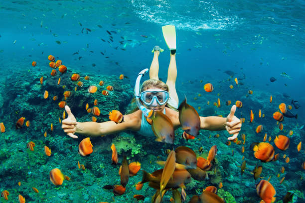
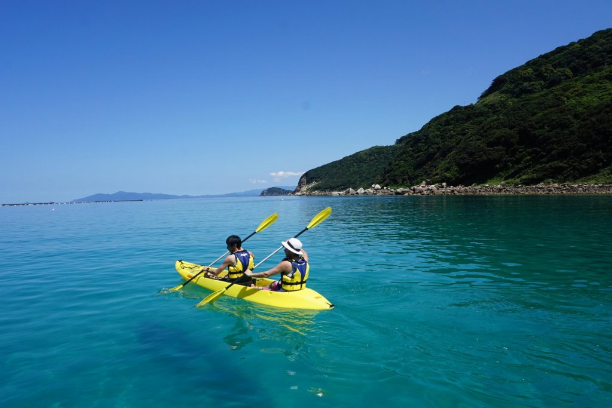

กิจกรรมยอดฮิตในสัตหีบ

ดำน้ำดูปะการัง
กิจกรรมยอดนิยมที่เกาะขามและเกาะแสมสาร เห็นปลาสวยงามและปะการังหลากสี

พายเรือคายัค
สนุกกับการพายเรือชมวิวรอบเกาะ น้ำใส เงียบสงบ เหมาะกับทุกวัย

ถ่ายรูปวิวทะเล
ถ่ายภาพกับทะเลสวย หาดทรายขาว หรือวิวบนเรือ สวยทุกมุม